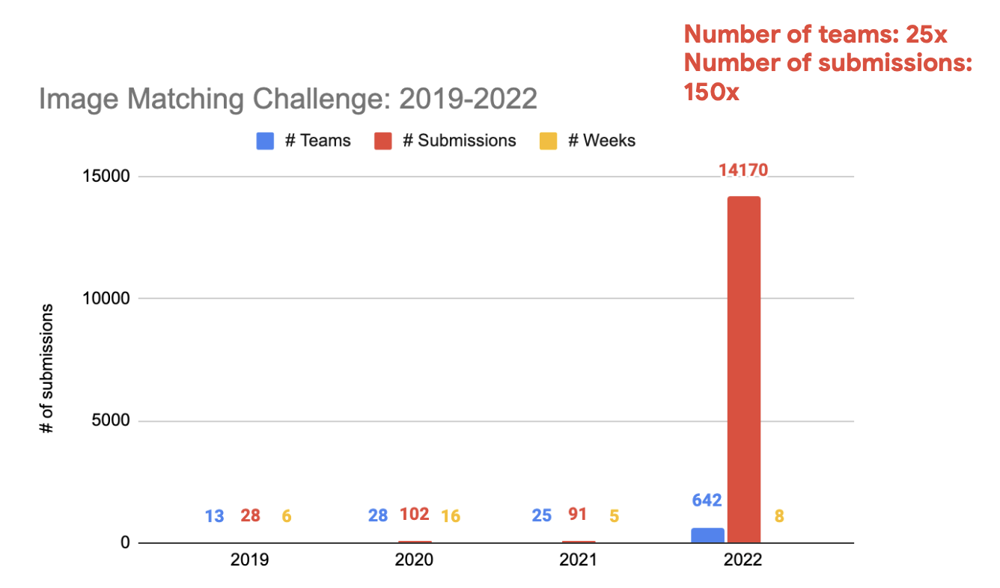
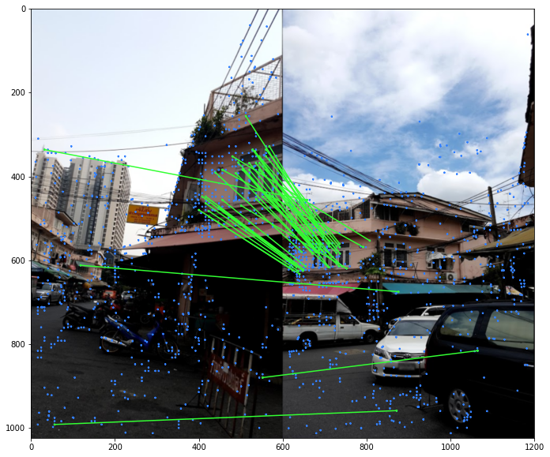
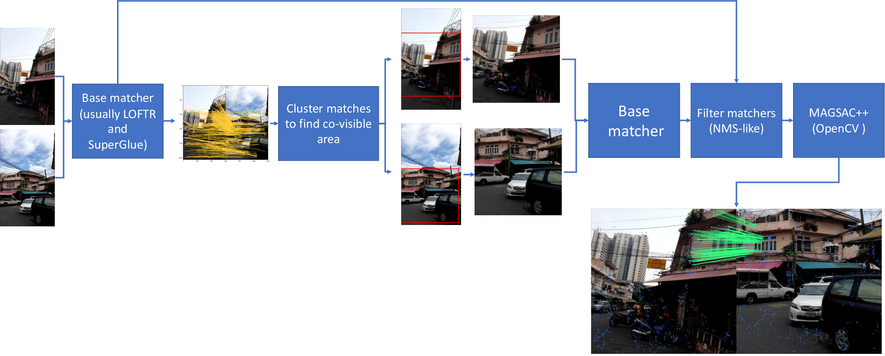
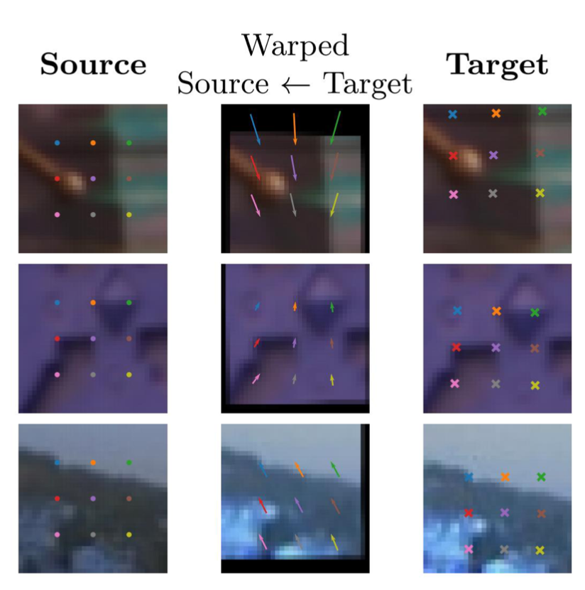
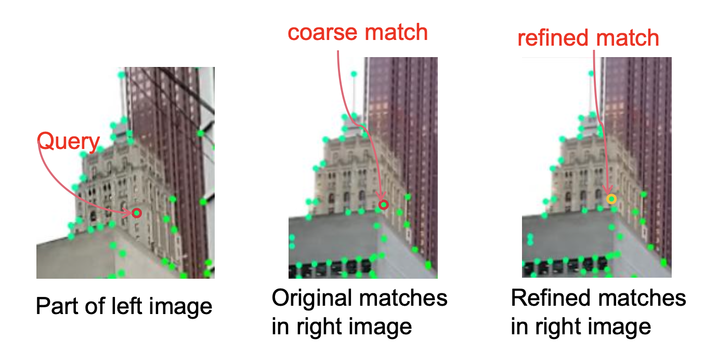

What has been changed in the challenge itself? Kaggle!
Yes, it is the main change, compared to previous years. How it works: - Participants submit notebooks that run offline - Test set remains private (not visible to participants) : very difficult to cheat (big concern at Kaggle) - Allows for quick iterations
That allowed us to get 25x more participants and 150x more submissions

There are other differences compared to the previous years.
No multiview track. Unlike previous competitions with multivew and stereo tracks, this year we focused on stereo only. There are many reasons for it, but the main is technical difficulty - to run and evaluate this under reasonable time limit. Having a pair of images as an input also could potentially broaden the family of methods used by participants.
New dataset and new metric. Unlike previous years, where our GT data was scale-less, now we have a metric ground truth, so we can evaluate translation error more in line with visual re-localization literature. We also used non-public dataset from Google, not available anywhere online. This was also only possible because of Kaggle Code competition nature.
Time limit. I have mentioned this already, but it is important. The submission should finish in 9 hours on Kaggle GPU virtual instance. This forced teams to think, what to add, and what not. Simple example would be a semantic segmentation masking - teams decided that benefit is not worth computational overhead it brings.

Top solutions-2022 overview
Unlike previous competitions, almost all the top-performing teams have converged to almost the same pipeline, although different in implementation details, but based on the same ideas. Let me condence it is for you, and if you are interested in participants own write-ups, just scroll down, I will provide all the links after the post.
The only top-participant, who did not apply any pre/post-processing is 2nd place winner hkchkc. It is based on novel matcher (let’s call it LoFTR 2.0), which he did not want to disclose yet. Anyway, check his write-up here.
So, the general pipeline is shown below. The following steps are present in the most of solutions:

Obtaining initial pool of matches, using a combination of off-the-shelf models. Such models are LoFTR, SuperGlue, QuadTree Attention LoFTR and DKM. Some of the teams also applied test-time scale augmentation (TTA) and concatenated tentative correspondence, which came from matching differently-resize images.
The next step is an estimation of the co-visible area between two images, similar to ScaleNet idea, but totally handcrafted and based on tentative matches. The approach is to cluster the matches using K-means or DBSCAN and then find the bounding box in each image, which contains the most of the matches. This can lead to potentially several “co-visible areas”. One may take a step further and estimate the homography between each matching region. An alternative to clustering (from 9th place) is to use MAGSAC++ with few iterations and coarse threshold to reject the most of outliers, and get the bounding box .
Each of such co-visible and matching regions is then cropped and resized to a predefined image size. Then the base-matcher, or other set of matching algorithms are applied for this “zoomed-in” image pair. All the correspondences are then reprojected into original image pair coordinates and contatenated with original correspondences. Important: “zoomed-in” is used to entend original tentative correspondences, not replace them, otherwise first failure would kill the matching process.
The correspondences are (optionally) filtered with some kind of non-maxima-suppression, like ANMS or radius-based NMS. The intuition here is to select the fewer set of more precise matches. It is interesting, that no team run any kind of filtering network as OANet.
MAGSAC++ from OpenCV (as recommended in my evaluation) is applied to find fundamental matrix.
Tricks which improve results
Switching img1 and img2 for LoFTR-like methods, because the method is asymmetric.
Running RANSAC and local feature extraction in separate threads. Although competition specific, this also may help to speed-up some semi-real-time SLAM methods.
Works with tuning
- Some teams successfully used two-view keypoint refinement, while others didn’t make it work.

Rare findings
Normalizing positional embeddings used in LoFTR-like methods. See solution 2.
When doing TTA, run and cache SuperPoint prior to SuperGlue matching, this saves a lot of time. Also, SuperGlue whould be run on the extracted, not reprojected keypoints.
Resize method matters a little bit: Lanczos seems to work the best.
Coordinates refinement by ECO-TR (improved fast version of COTR, not yet available online)

Does not work
Adding tentative matches from local features without learned matcher, such as DISK, ALike, etc. Team 1 mentioned that KeyNetAffNetHardNet was the one, which do imporove results, but at the cost of huge computational overhead, so it doesn’t worth it.
Semantic segmentation masking (sky, people, etc).
Final thoughts
Sooo…first think I want to say, is that going Kaggle was definitely worth it. We learned a lot, challenge got visibility, and many new improvements came out of of the challenge.
Second, is that our training set was too small and and too different from the test set, that is why it was almost useless. I don’t have any solution yet for this.
Thresholds on the pose accuracy were probably too loose, as you can see from the results.
On the lessons from the solution themselves:
2-stage approach of first finding covisible region, and then zooming-in into it seems to be way to go. What is also important, is to delay the decision until the very end.
It is better to first fix recall problem, i.e. to get as many tentative correspondences as possible, e.g. from different methods, and only the filter them. Modern RANSACs can recover the pose from a small inlier ratio, but never from small number of correct correspondences themselves.
Learned methods like LoFTR are very sensitive on the input image size, we probably have to do something about it.
List of all top solution write-ups
It is here, created by Addison Howard.
Everything you (didn’t) want to know about image matching